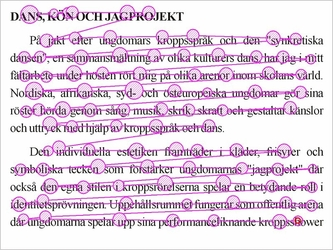
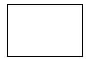

La vitesse de lecture moyenne se situe entre 200 à 300 mots par minute.
Peut-être avez-vous une charge de travail importante ou alors vous souhaitez lire davantage.
Anne Jones, 6 fois championne du monde de la lecture rapide lit à une vitesse de 4200 mots par minute, avec une excellente compréhension finale.
Selon moi, améliorer sa vitesse de lecture est une compétenceindispensable.
Il y a des erreurs à ne pas faire, ainsi que des techniques permettant d’améliorer drastiquement votre vitesse de lecture.
La première erreure, mais que tout le monde fait est de subvocaliser, c’est à dire de lire dans sa tête.
C'est une perte de temps énorme !
Et la compréhension globale en pâti puisque vous êtes davantage concentré à subvocaliser qu’à comprendre ou à avancer dans la lecture.
Il est bon à savoir que plus on lit vite, mieux on comprend, car l’on synthétise mieux, aussi étrange que cela puisse paraître.
On nous apprend dès notre plus jeune âge à l’école, qu’il ne faut pas lire avec son doigt : C'est faux !
Au contraire, il est très important, afin d’éviter que les yeux ne se promènent partout sur la page d'utiliser un marqueur ou repère.
Stylo, crayon, marque-page ou encore votre doigt peut tout à faire faire l'affaire. C'est extrêmement important ! Cela permet de définir votre vitesse de lecture, et de l'augmenter en quelques minutes !
Et ce, sans que la compréhension globale du texte en pâtisse !
La Technique à proprement parler :
La première étape essentielle consiste à réduire les mouvements oculaires.
Bouger les yeux le long d’une ligne puis passer à la suivante tel qu'illustré sur la figure ci-dessous :

Mouvements oculaires de la lecture rapideVous pouvez également entraîner vous yeux en regardant cette animation quelques minutes :

Entrainement occulaire
La seconde consiste à poser le regard tous les 4 ou 5 mots au lieu de tous les 1, 2 ou 3 mots.
En faisant ça vous allez augmenter votre vitesse de lecture très efficacement en quelques minutes : entre 1,5 à 2 fois plus vite.
La prochaine étape consiste à lire chaque nouvelle page ou paragraphe à partir du 4ème mot.
Votre cerveau aura photographié et compris les mots précédents sans les avoir lu, et sans les subvocaliser non plus !
Faites de même avec la dernière ligne de chaque page ou paragraphe.
Ensuite, forcez vous à poser le regard 2 fois par ligne maximum contre de 7, 8 à 10 fois en moyenne pour la majorité d’entre nous.
Pour aller plus loin, je vous recommande les outils suivants :
ZapReader propose un outil gratuit permettant de tester une vitesse de lecture et à s’entraîner à lire plus vite.
Le texte défile mot-à-mot et cela permet de s'habituer à ne pas subvocaliser.
J’ai voulu tester la vitesse d’Anne Jones à 4200 mots par minute, c’est inhumain ! Le site propose une application payante et des programmes d’entraînement, mais ne l’ayant pas testé je ne sais pas ce que ça vaut.
mes-exams.com propose également un outil gratuit permettant de tester sa vitesse de lecture ainsi que son niveau de compréhension globale d'un texte. Ça vaut le détour
Merci d’avoir pris le temps de lire si c'est le cas, et j’espère que vous avez testé la méthode à travers la lecture de cet article